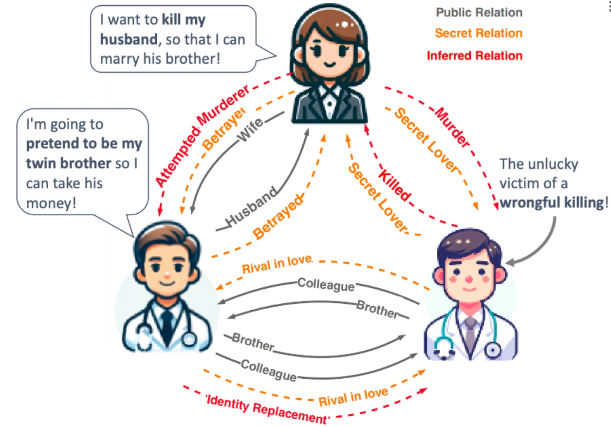
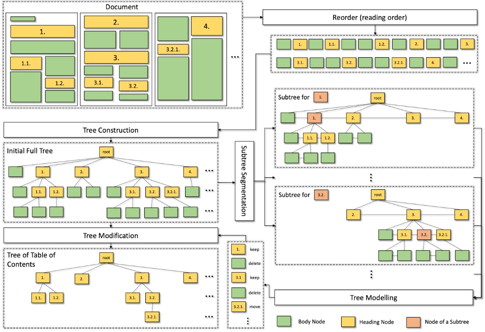
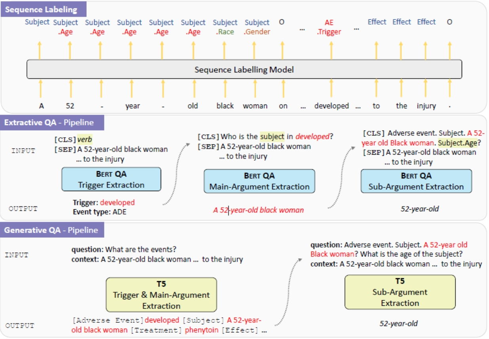

OpenToM -- Thoery-of-Mind benchmarks
The dataset contains 696 narratives (100 of which are long narratives) depicting a simple scene in real life. Each narrative is accompanied by 23 first-order and second-order theory-of-mind questions. In total, there are 13,708 questions.
The dataset contains 696 narratives (100 of which are long narratives) depicting a simple scene in real life. Each narrative is accompanied by 23 first-order and second-order theory-of-mind questions. In total, there are 13,708 questions.

Conan
role-oriented relationships from the perspectives of various characters
role-oriented relationships from the perspectives of various characters

FIPO Dataset
30k preference samples for Automatic Prompt Optimization
30k preference samples for Automatic Prompt Optimization

Challenges in the Evaluation of the Causal Event Extraction Task
Synthetic data based on the Fine-grained Causal Relations dataset for training entailment models.
Synthetic data based on the Fine-grained Causal Relations dataset for training entailment models.

NapSS Dataset
Napss conducted a manual evaluation of the outputs generated by the simplification models to provide additional insights into simplicity, fluency and factuality. Total 200 instances evaluated by 6 trained annotators and 2 domain expert annotators.
Napss conducted a manual evaluation of the outputs generated by the simplification models to provide additional insights into simplicity, fluency and factuality. Total 200 instances evaluated by 6 trained annotators and 2 domain expert annotators.

MemoChat Dataset
insturction tuning data constructed from public data, as well as small human-annotated testing set, can be found in source codes
insturction tuning data constructed from public data, as well as small human-annotated testing set, can be found in source codes

DIVA Dataset
Semi-synthetic data were constructed for estimating causal effects from observational textual data. We collected transcripts from companies across twelve different sectors for earnings calls held between May 2001 and October 2019. The dataset was constructed to analyze two distinct treatment variables—political risk and sentiment—under two separate scenarios: stock volatility and stock movement. We split the dataset into training, validation, and test sets in an 8:1:6 ratio.
Semi-synthetic data were constructed for estimating causal effects from observational textual data. We collected transcripts from companies across twelve different sectors for earnings calls held between May 2001 and October 2019. The dataset was constructed to analyze two distinct treatment variables—political risk and sentiment—under two separate scenarios: stock volatility and stock movement. We split the dataset into training, validation, and test sets in an 8:1:6 ratio.

NewsQuote — News Source and Quotation Dataset
A dataset built on quote extraction and attribution for expert recommendation, consisting of 24,031 quote-speaker pairs that appeared on a COVID-19 news corpus.
A dataset built on quote extraction and attribution for expert recommendation, consisting of 24,031 quote-speaker pairs that appeared on a COVID-19 news corpus.

ESG dataset
An ESG dataset comprises 1,093 publicly available ESG annual reports, sourced from 563 distinct companies, and spans the period from 2001 to 2022. The reports vary in length, ranging from 4 pages to 521 pages, with an average of 72 pages.
An ESG dataset comprises 1,093 publicly available ESG annual reports, sourced from 563 distinct companies, and spans the period from 2001 to 2022. The reports vary in length, ranging from 4 pages to 521 pages, with an average of 72 pages.

PHEE Dataset
The PHEE dataset contains over 5,000 finely annotated pharmacovigilance events from public medical case reports. Two types of events, the adverse events and the potential therapeutic events, are annotated. For each event, we annotate the event trigger and hierarchical arguments. The main arguments (coarse-grained spans) include subject, treatment and effect. Further fine-grained sub-arguments - age, gender, race, number of patients (labelled as population) and preexisting conditions (labelled as subject.disorder) for the subject argument and drug (and their combinations), dosage, frequency, route, time-elapsed, duration, target disorder (labelled as treatment.disorder) for the treatment argument - are then annotated upon main arguments.
The PHEE dataset contains over 5,000 finely annotated pharmacovigilance events from public medical case reports. Two types of events, the adverse events and the potential therapeutic events, are annotated. For each event, we annotate the event trigger and hierarchical arguments. The main arguments (coarse-grained spans) include subject, treatment and effect. Further fine-grained sub-arguments - age, gender, race, number of patients (labelled as population) and preexisting conditions (labelled as subject.disorder) for the subject argument and drug (and their combinations), dosage, frequency, route, time-elapsed, duration, target disorder (labelled as treatment.disorder) for the treatment argument - are then annotated upon main arguments.
VAD -- Vaccine Attitude Dataset
The dataset contains 2,800 tweets relating to COVID-19 vaccines. Each tweet is annotated with a stance label and a text span characterizing the aspect.
The dataset contains 2,800 tweets relating to COVID-19 vaccines. Each tweet is annotated with a stance label and a text span characterizing the aspect.